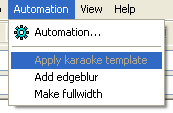

欢迎来到这里！这是有关卡拉OK模板执行器的第一篇教程，它可以帮助你创作 卡拉OK特效。在一系列教程里，我们由简单到复杂来进行教学。
你可以用两种方式运行卡拉OK模板应用器。我们主要讲解其中一种。
在Aegisub中的自动化菜单下找到卡拉OK模板应用器。

你可以看见一个叫做 应用卡拉OK模板 的选项，现在它应该是灰色的不可用状态。点击它可以应用写好的卡拉OK模板，然而现在它是不可用的，因为你还没有写好模板，跟随着教程，你会写出自己的卡拉OK模板。
如果你没有这个选项，你的Aegisub可能没有安装完整，或者损坏了。你需要修复安装才能使用卡拉OK模板执行器。
但是还有其他的东西需要确认。
卡拉OK模板执行能做许多事，但是它没办法猜到歌曲的歌词，也没办法猜测歌词和音乐的同步信息。你不得不亲自给歌词制作卡拉OK时间。你可以在 Karaoke Timing Tutorial 中找到给歌词制作卡拉OK时间（K值）的方法。
我们把基础的含有卡拉OK时间信息的歌词称为K值歌词(\k timing)，但它们不含有特效，对于 k值歌词 。当它被应用了卡拉OK特效后，我们称它 styled karaoke 。
如果你是从头开始这项工作，在已经有歌词文本的情况下，你需要在歌词所在的窗口点击 编辑→复制，然后到Aegisub中点击 编辑→粘贴，这样就把歌词导入了Aegisub。
Dialogue: 0,0:00:01.85,0:00:09.06,Default,,0000,0000,0000,,{\k97}shi{\k41}ta{\k0} {\k20}no{\k10} {\k30}u{\k80}e{\k53} {\k23}a{\k21}ma{\k39}ku{\k7} {\k24}to{\k24}ke{\k31}ru{\k0} {\k37}wa{\k23}ta{\k92}gu{\k69}mo
Dialogue: 0,0:00:09.28,0:00:16.21,Default,,0000,0000,0000,,{\k79}ki{\k61}su{\k0} {\k9}o{\k0} {\k37}shi{\k98}te{\k40} {\k23}ku{\k25}ro{\k40}i{\k0} {\k28}tsu{\k19}ba{\k51}sa{\k0} {\k11}no{\k0} {\k34}shi{\k138}ta
如果你已经给歌词打好K值，那么我们可以开始下一步了。
你不必读取任何音频，但是读取视频是个好主意。如果你没有可用的视频，可以使用 视频→使用空白视频 。这不是个有趣的视频，但在它上面可以预览你的字幕。
目前，我们有了除了确切的模板以外的一切，现在我们来编写它。 首先，介绍如何添加一行模板。你做的每一步的意义后面都有相应的解释。
template line" 。(别打上引号!) 敲 回车 来保存特效栏内容。{\r\t($start,$mid,\fscy120)\t($mid,$end,\fscy100)}插入一张截屏来展示做完这几步后看起来是什么样子。
现在再看看 自动化 菜单。如果你正确地编写了模板， 应用卡拉OK模板 看起来是可用的。如果还是灰色的，请按上述步骤检查。
点击 应用卡拉OK模板 来观察卡拉OK模板执行器如何工作。
另一张截图，展示应用完模板的效果.
如果你已经读取了视频，那么现在应该能在Aegisub里预览到效果了。
注意到模板行还在它原来的位置，打好K值的行变成了注释行，这些行的特效栏会被填写上 karaoke 。 卡拉OK模板执行器会保留原来的行，所以你不必担心丢失它们。但是它还有另外的功能。
如果上面这些读懂了，也做成功了，那就看看下面:
{\r\k$kdur\t($start,$end,\1c&H00FF00&)\t($start,$mid,\fscy120)\t($mid,$end,\fscy100)}再添加一张截图
卡拉OK模板执行器重新利用了打好K值的行，并且赋予它们特效。你也可以尝试改变被注释的打好K的行，然后重新应用模板。
像这样，你可以逐渐制作出理想的特效，并且随之预览它。
学习每部分的教程有何意义？下面的解释虽然没能涵盖所有的事情，但是对现在的你来说应该是足够了。
template。line(行)。(译者注：如果你使用 syl 替换掉 line，那么生成的结果行数目与原行含有的\k数目，即音节数相同，起到拆行为音节的效果)template line 意味着这是一个 行类型 的 模板行 。fx 。这两个字母用来提醒卡拉OK模板执行器，下一次应用模板时，这行应当被替换(事实上是被移除)。$start, $end, $mid 和 $kdur。
变量在应用模板时会被具体音节的属性值(位置时间信息等)替换。
$start 会被音节的开始时间替换掉。它以毫秒为单位，相对于行的开始时间计算，可以用来配合具有时间参数的特效标签例如 \t, \move 和 \fade 等。$end 是音节相对于行开始时间的结束时间，以毫秒为单位。$mid，它是音节的 中间时间 ，处于 $start 和 $end 中间。在上面的示例模板中，我们让音节在前半时间变高(事实上，我们总是使音节在前半段产生这种变化)。
并在后半段时间恢复到原来的大小。它也是以毫秒为单位的。$kdur 变量，它比较特殊，因为是以厘秒为单位。它等同于 \k 标签后面的数字，使用它的目的几乎都是把 \k标签 放回到行中，就像我们上面的模板中写的。知道了这些，你应该已经可以创作许多特效啦。配合着 ASS特效标签 ，发挥想象，会有更丰富的效果。
你也可以 继续下一篇教程，在那里你可以了解如何对变量做一些数学上的调整，来获取一些变型。